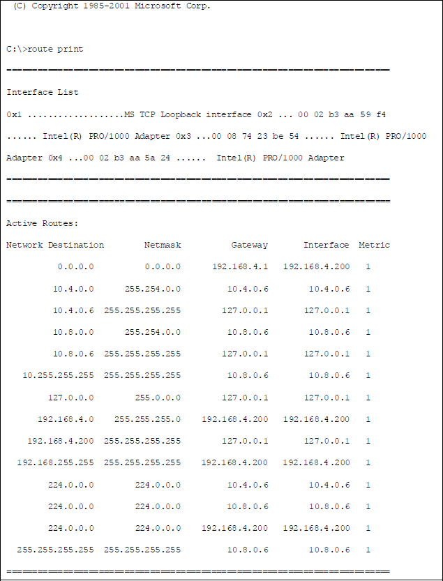
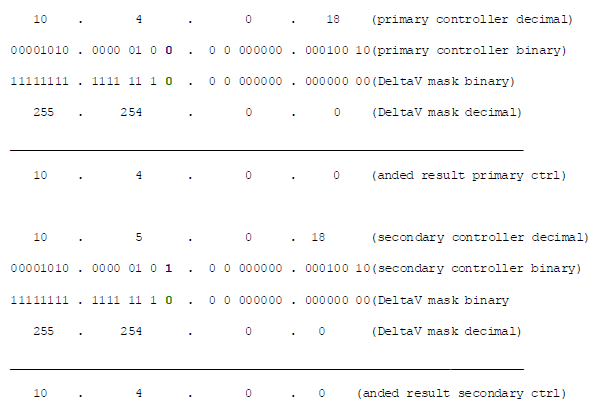
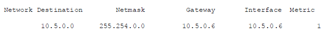
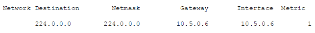

IP masks and routing of messages in a DeltaV workstation
This topic discusses how the IP mask works with the DeltaV-defined IP addresses and specifically how DeltaV workstations use the IP mask to route messages on different networks to assist you in determining the best IP address and mask to use.
When various IP addresses and masks have been applied to unused NIC’s in DeltaV workstations issues can arise due to the combination of IP address and IP masks used.
A best practice for unused NICs is to uninstall the NIC card driver.
General Information of how Message Routing is Performed using the IP Mask
- The workstation will ‘AND’ its IP address with the mask and obtain a result. This ‘ANDing’ is done at the binary level, bit for bit. This will occur for each NIC installed in the workstation.
- As the workstation attempts to determine which NIC to route a message to, it will ‘AND’ the destination address of the message to the mask for each NIC.
- The NIC which has the ‘ANDed’’ results for steps one and two equal will then be selected as the current network for routing the message.
- If there is no NIC that results with the same ‘ANDed’ result as the destination address of the message, then it will select the NIC on the network that has a default gateway address configured.
DeltaV workstations and message routing
In the following route print example, the DeltaV workstation (a ProfessionalPLUS) has three NIC’s installed in it. Two are the area control network (ACN) NICs. The third NIC (192.168.4.200) is the Plant LAN NIC and has a designated default gateway (router) configured at IP address 192.168.4.1. The Plant LAN NIC has an IP mask of 255.255.255.0. The ‘ANDed’ result of 192.168.4.200 with this mask is 192.168.4.0. The least significant octet of the IP address is masked out by the zeros in the mask.
The DeltaV mask is 255.254.0.0. The 'ANDed' result of a message addressed to 192.168.5.112 is 192.168.0.0. The 'ANDed' result of this same message against the Plant LAN mask of 255.255.255.0 is 192.168.5.0. None of these results equals the result of the three NIC addresses against their respective masks (10.4.0.0, 10.8.0.0, and 192.168.4.0).
Because none of the NICs resulted in a match, the workstation routes the message to the default gateway network address (in this example, configured on the Plant LAN NIC (192.168.4.200) as 192.168.4.1). The router can then route the message to the 195.168.5.0 network.

Redundant controllers and message routing
With DeltaV redundant controllers, the IP address for the primary control network is 10.4.xx.xx for the primary controller and 10.5.xx.xx for the redundant controller on the primary control network. With the DeltaV mask of 255.254.0.0 the ‘ANDed’ result for either 10.4.xx.xx or 10.5.xx.xx is the same (10.4.0.0) so the devices will associate both addresses with the same network, the primary control network in this example. The least significant bit is masked out on the octet with the 254 value in the mask. See below for a detailed bit level depiction of what occurs.

For the secondary control network the following applies. The ‘ANDed’’ result is 10.8.0.0 for both the primary and secondary controller on the secondary control network. As long as the ‘ANDed’’ result is the same for both the 10.8.xx.xx and 10.9.xx.xx addresses they are considered to be on the same network.
DeltaV workstations do not use the 10.5.x.x or 10.9.x.x IP addresses as there are no redundant DeltaV workstations in the same way as DeltaV controllers.
Because of the DeltaV 255.254.0.0 mask, care should be taken on entering an IP address on any unused NIC’s in a DeltaV workstation. For example, if an unused NIC was given an IP address of 10.9.0.6 and a mask of 255.254.0.0, the workstation would consider this NIC on the secondary control network just as it would if the IP address is 10.8.0.6.
For workstations with multiple NIC’s on the same network, the Microsoft (Windows) operating system will attempt to load balance the number of client connections between the different NIC’s on the same subnet.
DeltaV engineering applications such as Control Studio or DeltaV Diagnostics, DeltaV Batch applications, or OPC applications utilize DCOM to establish communication connections. The DeltaV Batch Operator Interface uses OPC and therefore DCOM to communicate to the Batch Executive. Typically DeltaV workstations are set up with the secondary control NIC first in the binding order to route DCOM applications on the secondary control network.
In the previous example of an unused NIC at 10.9.0.6, the operating system regards both the 10.8.0.6 and 10.9.0.6 NIC’s on the same network (secondary). This may affect DCOM operation on the engineering applications as DCOM selects the secondary control network. If the 10.8.0.6 NIC is first in the binding order, DCOM will use this first, but after several client connections are placed on 10.8.0.6 some load balancing may be attempted to 10.9.0.6 even though there is no cable connected to this NIC. If this occurs, DCOM will be negatively affected. This will be observed as issues with the engineering, batch, and OPC applications.
A best practice for unused NICs is to uninstall the NIC card driver.
If the NIC driver is not uninstalled, you can address the unused NIC to an IP address that will not be considered on the secondary control network (for example 192.168.7.15 with a mask of 255.255.255.0).
Network Time Protocol (NTP) broadcasts on a DeltaV network
Network Time Protocol (NTP) operation can be affected by how the IP address and masks are used. In DeltaV, the NTP operation uses a time broadcast where the DeltaV Master Network Time Server broadcasts to 10.5.255.255 on the primary and 10.9.255.255 on the secondary where both addresses use the 255.254.0.0 mask.
If an unused NIC on the master network time server were addressed at 10.5.0.6 with a mask of 255.254.0.0, the route print for this workstation would include an additional entry of the following:

This route entry essentially is designating the 10.5.0.6 NIC as the interface to the 10.5.0.0 network but with this mask the 10.5.0.0 network is treated as if it were the same as the 10.4.0.0 network.
The primary NTP broadcast would be routed to the NIC addressed 10.5.0.6 even though it is not connected to any network. There would be no NTP time update broadcast on the 10.4.0.0 network (primary).
All the DeltaV nodes would reflect this in Diagnostics with an NTP server address of 10.8.0.6 (secondary network) if the ProfessionalPLUS were the master time protocol server as in this example.
Any DeltaV node that did not have a secondary network configured and connected would not receive an NTP time update.
A best practice for unused NICs is to uninstall the NIC card driver.
By addressing the unused NIC to say 192.168.7.15 with a mask of 255.255.255.0, then the 10.4.0.6 NIC with a mask of 255.254.0.0 becomes the NIC of choice for the NTP broadcast message at the 10.5.255.255 IP address which, when ‘ANDed’’ to the 255.254.0.0 mask, results in 10.4.0.0. This equals the result of 10.4.0.6 ‘ANDed’’ to the 255.254.0.0 mask.
Inability to browse the network and see all other workstations
A possible symptom of incorrect IP addressing and IP masks is the inability to browse the network and see every other workstation. An affected workstation may be attempting to browse the network through an unused NIC believing it to be on the same network. With the previous (the NTP) example, the workstation may attempt to browse the network using 10.5.0.6 instead of 10.4.0.6. There may be an additional entry in the route print as follows:

IP addresses that begin with 224 are class ‘D’ multicast addresses. More specifically the 224.0.0.1 multicast IP address designates all multicast aware hosts. The multicast IP address of 224.0.1.24 is the Microsoft WINS locator service. Browsing utilizes IP multicasting. What the above entry is indicating is the 10.5.0.6 NIC will be used for this function (as well as all other NIC’s).
A best practice for unused NICs is to uninstall the NIC card driver.